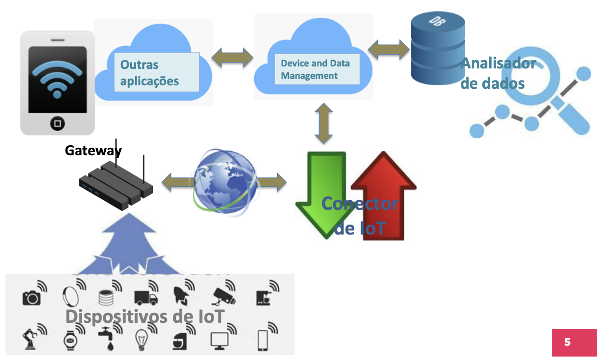
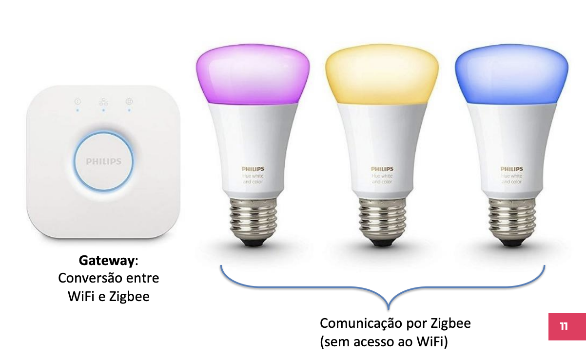
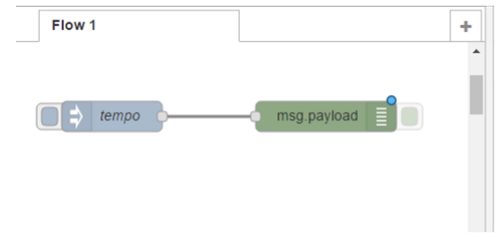
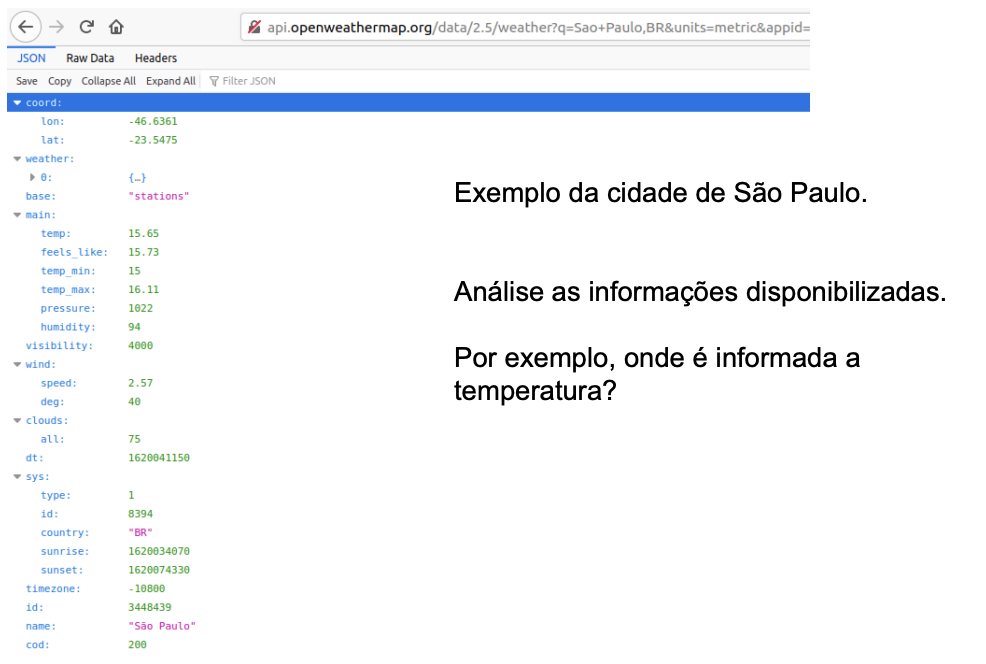

Neste Laboratório vamos trabalhar com Node-red e conhecer o protocolo MQTT.
- arquivo pdf do projeto: Slide
Introdução à IoT¶
Agenda¶
- Instalação do Node-RED e primeiros testes
- Montagem de um dashboard no Node-RED
- Criação de um end-point
- Apre
 MQTT
MQTT
Conectando dispositivos a aplicações¶
Agora que já exploramos as funcionalidades do Arduino e sua capacidade de conectar sensores e atuadores, vamos prosseguir conectando o Arduino a aplicações que fazem uso desse dispositivo.
Em primeiro lugar, vamos relembrar a arquitetura que usaremos para os dispositivos de IoT se conectarem às suas aplicações.
Arquitetura básica de IoT¶
A arquitetura de implantação apresentada aqui é um modelo padrão para inspirar projetos reais. Ela inclui os elementos fundamentais para a conectividade, sem detalhar soluções para problemas acessórios.

- Interoperabilidade: facilita a compatibilidade entre diferentes projetos de IoT.
- Modularidade: define módulos que podem ser criados separadamente ou usados como "off-the-shelf".
Dispositivos de IoT¶
Os dispositivos de IoT interagem com o ambiente ao seu redor, capturando dados de sensores ou executando comandos por meio de atuadores.
- Cada funcionalidade no dispositivo pode ser considerada uma aplicação (Endpoint Application).
- Cada aplicação deve ser univocamente endereçável.
Conector de IoT¶
Os conectores de IoT gerenciam mensagens que chegam dos dispositivos ou são destinadas a eles, adaptando-as ao protocolo de cada dispositivo.
- Pode haver conectores diferentes para protocolos variados.
- Protocolos comuns em IoT: MQTT, WebSocket, CoAP, LoRaWAN.
Gerenciamento de dispositivos e dados¶
Este componente faz o gerenciamento remoto dos dispositivos e de seus dados, autorizando o acesso de outras aplicações.
- Cadastra novos dispositivos e aplicações.
- Monitora a disponibilidade dos dispositivos.
- Envia comandos de gerenciamento, como inicialização, reinicialização, desligamento e atualização de firmware.
Bancos de dados e análise de dados¶
Armazena dados provenientes das aplicações e comandos destinados aos dispositivos.
- Bancos de dados NoSQL são mais indicados para a IoT devido à natureza diversificada e em constante mudança dos dados.
- Analisadores de dados monitoram os dados para melhor aproveitamento.
Gateway¶
O gateway conecta dispositivos sem acesso direto à internet e realiza a conversão de protocolos entre os dispositivos de IoT e o conector de IoT.

- Gerencia múltiplos protocolos, especialmente em LAN’s, PAN’s e HAN’s (ex: Zigbee, Bluetooth, LoRa, Thread/6LoWPAN).
Node-RED¶
O Node-RED é uma plataforma de programação visual para sistemas baseados em eventos. Ele executa como um servidor web e é amplamente utilizado para conectar dispositivos de IoT.
- Programado em Node.js, é uma ferramenta visual para editar fluxos de mensagens.
- Disponível em serviços de Cloud como o IBM Bluemix.
Instalação do Node-RED¶
- Instale o Node.js (versão LTS) no site Node.js.
- No terminal, digite:
npm install -g --unsafe-perm node-red - Para rodar o Node-RED:
node-red - Acesse no navegador: http://localhost:1880
Primeiro fluxo no Node-RED¶
- Conecte um nó de entrada do tipo "inject" a um nó "debug", faça o deploy e observe o resultado no painel de debug.
- Modifique o nó "inject" e veja as alterações no resultado.

Desafios no Node-RED¶
Desafio 1: Monitor de clima¶
- Cadastre-se no site OpenWeather, crie um token e leia a documentação da API Current.
- Crie uma URL para obter o tempo de uma cidade de sua preferência e compare o resultado com a saída no Node-RED.

Desafio 2: Dashboard¶
Crie um dashboard que exiba informações de duas ou mais cidades, incluindo: - Temperatura atual - Temperatura mínima - Temperatura máxima - Velocidade do vento - Umidade relativa - Sensação térmica
Atualize os dados a cada 5 segundos.
MQTT¶
O MQTT é um protocolo leve para publicação e recebimento de mensagens, adequado para dispositivos com alta latência e baixa largura de banda.
Servidores MQTT¶
- Brokers públicos: iot.eclipse.org, test.mosquitto.org, dev.rabbitmq.com, broker.mqttdashboard.com.
- Uso local: O servidor Mosquitto é indicado para redes locais com poucos dispositivos.
Desafio 3: Cliente MQTT no Node-RED¶
Crie um chat usando o MQTT, configurando um tópico com camelCase para enviar e receber mensagens.